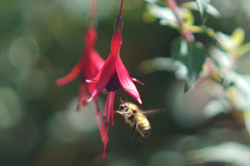
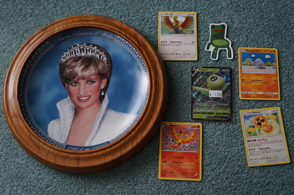
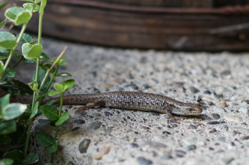
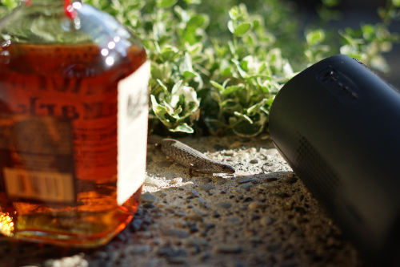
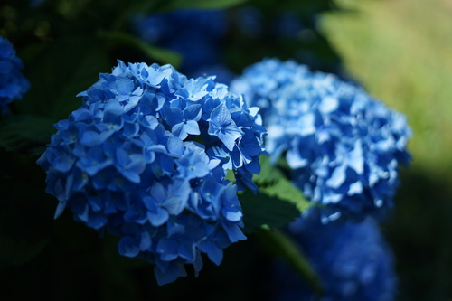
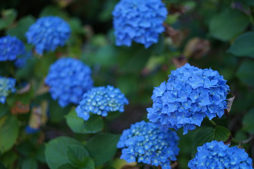
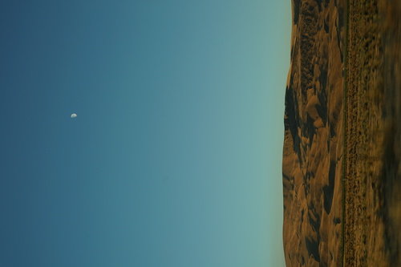
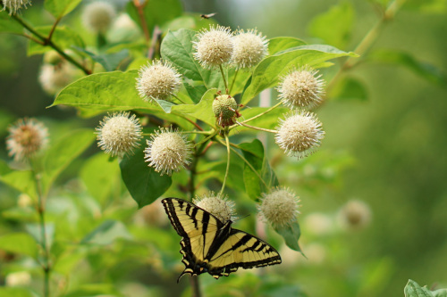
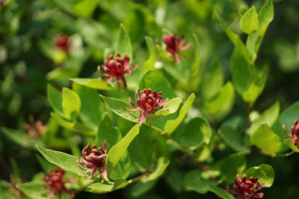
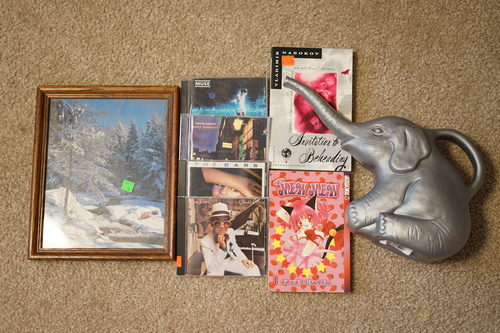

im posting 2 blogs in 1 day. its my blog and i'll blog if i want to. but really im (not) dumb enough to post a blog saying im not at home while i'm not at home so i am at home now dont bother attempting to steal my dolls. anyway smash that back button to read my seattle review.
consignment shop finds!
the fan rotom and phanpy are mine! ryan bought them for me!
here is a wild skink. very cute! a little stinker. he lives outside of ryan's parents house. theres a rumor he runs into the garage and has to be kicked out!!!
i finished pnin while i was at his parents. much to think about. i read it on my kindle but im gonna have to get out my real copy to match up some notes and happenings. my heart goes out to my dear friend pnin!!
  we came back with makoto! i dragged him and ryan to the arbitrarium. it was a very nice walk i wish it was within walking distance of my house. id go there all the time
 this plant looks like flowering tea. do you think they had flowers in mind when they came up with flowering tea?!
and then i bought some more stuff. sorry!!!
i put a photo of ronnie in it. thank you clay for the photo!!
i just listened to it and nothing sticks out.
yes i do already own a copy of this before you ask
i was thinking of gary numan when i bought this. whoops. havent listened to it yet
ryan bought this. in this house we do not skip crocodile rock.
did you really think ryan could leave a nabokov behind??
i said i would buy an elephant watering can if i ever saw one and then guess what happened. i am cry at the price
and some pokemon cards... the last 3 columns are ryans. he needed 2 imakunis for some reason. i really dont know if ill buy more packs now that im finding out i can buy cards with the cute art for 6 cents a pop
i resorted my binder so that the artists i like most are in the front and then a few pages of my favorite pokeys.
also big secret but for some reason i want to buy a barbie. do i even need a barbie?? what would i even do with one. shes just so cute though. the clippies in her hair! the houndstooth! i hate sewing in that scale though... what would i even make for her..